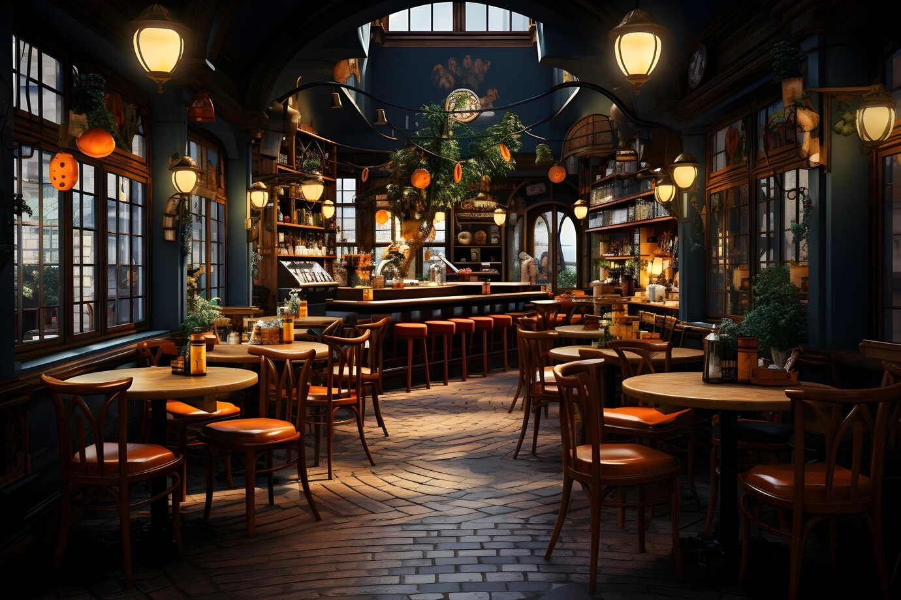

Welcome to "Your Favorite Dishes" – a culinary haven where the world's flavors converge to tantalize your taste buds. Nestled in the heart of Ukraine, we take pride in curating a diverse selection of dishes from across the globe, ensuring that every visitor embarks on a flavorful journey without leaving the comfort of their homeland.
At "Your Favorite Dishes," we believe that food transcends borders, offering a window into different cultures and traditions. Our menu reflects this philosophy, featuring an eclectic array of delicacies inspired by cuisines from various corners of the world. From the aromatic spices of India to the savory delights of Italy, each dish is crafted with authenticity and passion, promising a culinary adventure like no other.
Our team of talented chefs brings years of experience and expertise to the kitchen, meticulously preparing each dish to perfection. Whether you're craving the bold flavors of Mexican street food or the subtle elegance of Japanese sushi, we strive to exceed your expectations with every bite.
Beyond just a dining experience, "Your Favorite Dishes" is a celebration of diversity, unity, and the universal language of food. It's a place where friends and families gather to share stories, laughter, and, most importantly, unforgettable meals.
We invite you to join us on a gastronomic voyage around the world, where every plate tells a story and every taste transports you to distant lands. Come discover your new favorite dish with us at "Your Favorite Dishes" – where culinary dreams come true, one bite at a time.
Our Restaurant
Tuesday 8:00 - 23:00
Wednesday 8:00 - 23:00
Thursday 8:00 - 23:00
Friday 8:00 - 23:00
Saturday 10:00 - 22:00
Sunday-Monday - Closed